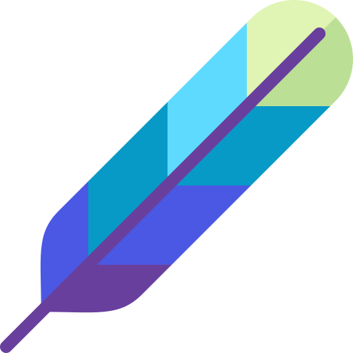

<div class="example-container" [class.example-is-mobile]="mobileQuery.matches">
    <div [class.unicorn-dark-theme]="isDark">
        <mat-toolbar class="example-toolbar" color="primary">
            <div class="d-block d-sm-block d-md-none">
                <button mat-icon-button (click)="snav.toggle()">
                    <mat-icon>menu</mat-icon>
                </button>
            </div>
            <button mat-button disabled>
                
            </button>
            <section class="mat-typography">
                <h1 [innerHTML]="htmlSnippet"></h1>
            </section>
            <div class="d-none d-xs-none d-sm-none d-md-block d-lg-block d-xl-block"
                style="text-align: center; flex: auto">
                <span class="typed-element fancyFont"></span>
            </div>
            <span class="example-spacer"></span>
            <div class="d-none d-lg-block d-md-block d-xl-block">
                <a mat-button [routerLinkActive]="['mat-accent']" [routerLink]="['/home/dashboard/posts']">Home</a>
                <a *ngIf="isLogged" mat-button [routerLinkActive]="['mat-accent']"
                    [routerLink]="['/home/dashboard/createPost']">Create Post</a>
                <a *ngIf="isLogged" mat-button [routerLinkActive]="['mat-accent']"
                    [routerLink]="['/home/dashboard/myposts']">My
                    Posts</a>
                <a mat-button (click)="authentication()">{{isLogged? 'Logout':'Login'}}</a>
                &nbsp;
                <mat-slide-toggle [checked]="isDark ? true : false" (change)="toggleDarkTheme($event.checked)">
                    <i *ngIf="!isDark" class="material-icons">
                        brightness_4
                    </i>
                    <i *ngIf="isDark" class="material-icons">
                        brightness_5
                    </i>
                </mat-slide-toggle>
            </div>
        </mat-toolbar>
        <mat-sidenav-container class="example-sidenav-container" [style.marginTop.px]="mobileQuery.matches ? 56 : 0">
            <mat-sidenav #snav [mode]="mobileQuery.matches ? 'over' : 'side'" [fixedInViewport]="mobileQuery.matches"
                fixedTopGap="56">
                <mat-nav-list>
                    <a mat-list-item [routerLinkActive]="['mat-accent']" [routerLink]="['/home/dashboard/posts']">
                        <mat-icon class="fa fa-home fa-lg" aria-hidden="true"></mat-icon> Home
                    </a>
                    <a *ngIf="isLogged" mat-list-item [routerLinkActive]="['mat-accent']"
                        [routerLink]="['/home/dashboard/createPost']">
                        <mat-icon>create</mat-icon> Create Post
                    </a>
                    <a *ngIf="isLogged" mat-list-item [routerLinkActive]="['mat-accent']"
                        [routerLink]="['/home/dashboard/myposts']">
                        <mat-icon>art_track</mat-icon> My Posts
                    </a>
                    <a mat-list-item (click)="authentication()">
                        <mat-icon *ngIf="!isLogged" class="fa fa-sign-in fa-lg" aria-hidden="true"></mat-icon>
                        <mat-icon *ngIf="isLogged" class="fa fa-sign-out fa-lg" aria-hidden="true"></mat-icon>
                        {{isLogged? 'Logout':'Login'}}
                    </a>
                </mat-nav-list>
            </mat-sidenav>
            <mat-sidenav-content>
                <router-outlet>
                    <ngx-spinner bdOpacity=0.9 bdColor="#333" size="medium" color="#fff" type="ball-beat"
                        [fullScreen]="true">
                        <p style="color: white"> Loading... </p>
                    </ngx-spinner>
                </router-outlet>
            </mat-sidenav-content>
        </mat-sidenav-container>
    </div>
</div>